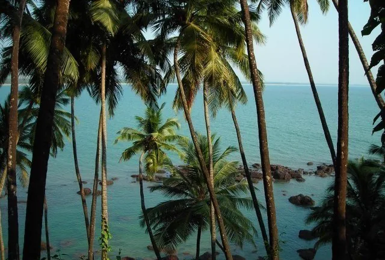
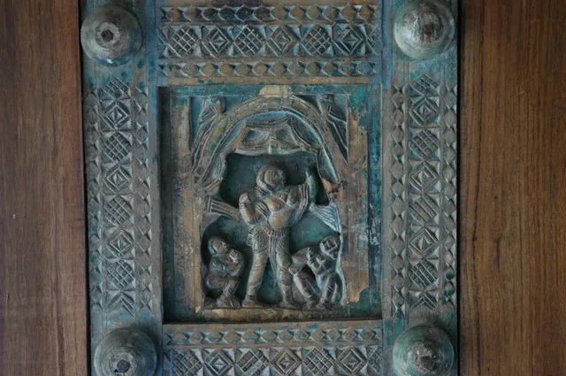
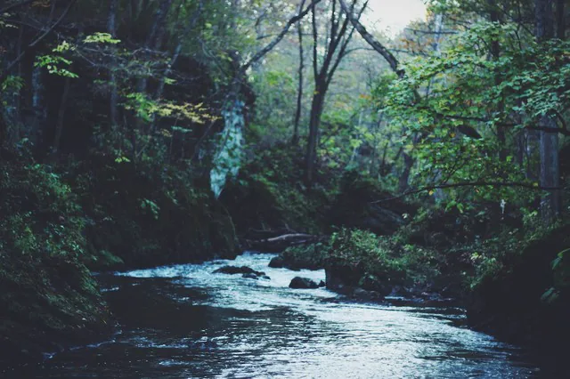

Quiet
Betalbatim
The calm one: clean smooth sand and a long unbroken view, best at sunset. On some nights the water is bioluminescent.

Scroll
Beyond the beaches are villages shaped by red earth, coconut groves, old houses, chapels, temples, orchards and winding roads. From Loutolim, most of it is inside an afternoon.

Where you are
Loutolim sits on a hillock in Salcete, ten kilometres from Madgaon station and twenty minutes from the airport — lush paddy fields, tranquil village roads, and some of the finest Goan-Portuguese architecture left in the state.
Finding usFifteen minutes away
Salcete's western edge is a near-continuous run of sand. The three closest to the house each have a different temperament.
Quiet
The calm one: clean smooth sand and a long unbroken view, best at sunset. On some nights the water is bioluminescent.

Lively
The busiest beach in South Goa, and the one with everything on it — white sand, water sports, dolphin trips and full-moon nights.
Easy
Calm water for swimming and a line of shacks doing the day's catch. The one to walk in the late afternoon.

On your doorstep
Casa Araujo Alvares, a 251-year-old family mansion, is now a heritage museum with a sound-and-light tour through its office, dining hall, bedrooms and kitchen. Beside it, Ancestral Goa recreates village life under Portuguese rule as an open-air museum.
Fifteen minutes on, Chandor holds the Menezes Braganza house — over 350 years old and still lived in by the family.
Our own heritage
Inland
The spice plantations around Ponda grow pepper, cardamom and cinnamon, and most will walk you through the crop and feed you afterwards. Further east the land climbs into the ghats — red earth, winding roads, and streams that run hardest through the monsoon.
Goa Chitra, the state's first ethnographic museum, keeps the other half of the story: pottery, farming tools, palanquins and carts from the working countryside.
When to come
One letter a week from the house, and a note when the season turns. No offers, no campaigns — and you can stop it in one click.
Subscribe